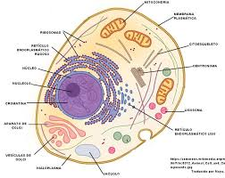

El citoesquelet
Són uns filaments de gruix i mida variable que constitueixen l'esquelet de la cèl.lula i li donen estructura. Es poden classificar en tres grups en ordre de diàmetre: filaments d'actina, filaments intermedis i microtúbuls.

Filaments d'actina o microfilaments
Els microfilaments són fibres i la unitat bàsica és l’actina que tenen un diàmetre entre 6 i 7 nm.
• L’actina és una proteïna globular que polimeritza formant hèlix dobles que són els filaments d’actina. Aquests estan units a la membrana cel·lular per complexos proteics.
• Té un extrem + i un altre -; el + polimeritza i despolimeritza més ràpid.
• El còrtex cel.lular és molt ric en actina i té un paper en l’adherència i la motilitat.
• Funcions dels filaments d’actina:
- Contracció muscular
- Adhesió i migració cel·lular
- Endocitosi, exocitosi i transport de vesícules
- Formació de microvellositats i estructura enteròcits.
Filaments intermedis
Els filaments intermedis són fibres que alhora contenen proteïnes fibroses.
- Són molt resistents a les tensions mecàniques.
- Forma una xarxa del nucli a la periferia cel.lular. S’anclen a unions intercel.lulars o matriu extracel.lular.
- Són molt heterogenis; compostos per subunitats diferents.
Propietats de les proteïnes que formen part dels filaments intermedis:
- Cap i cua globular amb una zona allargada central en forma de doble
hèlix. La seva forma facilita que formin dímers - La seva zona central és similar en diametre el que fa que puguin polimeritzar.
- Es divideixen en queratines, neurofilaments, làmines nuclears ( làmina A, làmina B i lámina C) i les relacionades amb la vimentina.
- Són més abundants en les cèl·lules epitelials, musculars i nervioses.
- La funció és suportar tensió mecànica.
Microtúbuls
- Els microtúbuls són tubs buits formats per una unitat bàsica que és la tubulina. És una proteïna globular polar. Estan
formats per la α i β tubulina que a la vegada formen protofilaments i a la vegada microtúbuls. - Poden organitzar-se en centríols, que estan formats per 9 triplets de microtúbuls formant cercle.
- També poden formar axons, cilis i flagels.
- Al igual que els microfilaments tenen un extrem de polimerització ràpida i un de lenta.
Funcions:
- Proporcionar estructura a la cèl·lula
- Organitzar el moviment de tots els orgànuls cel·lulars.
- Donar mobilitat a la cèl·lula a través de cilis i flagels.